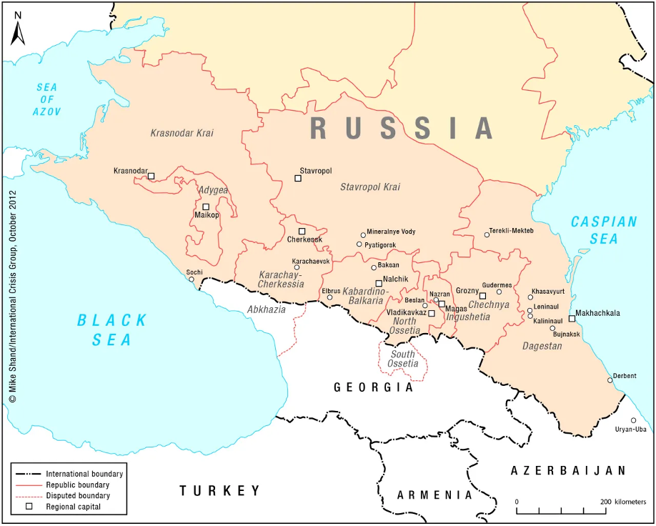

Bản đồ hành chính

Các khu vực gợi ý
| Khu vực | Thành phố / địa điểm gợi ý |
|---|---|
| Yerevan | Yerevan |
| Kotayk | Hrazdan, Tsaghkadzor |
| Lori | Vanadzor, Alaverdi |
| Shirak | Gyumri |
| Tavush | Dilijan, Ijevan |
| Syunik | Goris, Kapan |
Ví dụ những nơi có thể gửi tin nhắn và cách liên hệ
Đây là danh sách khởi đầu, không phải danh sách đầy đủ. Nên mở nguồn và kiểm tra lại trước khi gửi.
| Đơn vị | Loại | Liên hệ công khai | Nguồn |
|---|---|---|---|
| Chính quyền thành phố Yerevan | Hành chính | Đường dây 1-05 1 Argishti Street, Yerevan | Trang chính thức |
| Phòng báo chí Yerevan | Truyền thông | press@yerevan.am +374 11 514167 | Trang đối tác công |
| Armenia Travel | Du lịch quốc gia | Biểu mẫu liên hệ trực tuyến | Trang chính thức |
| Ủy ban Du lịch Armenia | Du lịch / hợp tác quốc tế | yan@mineconomy.am +374 11 597159 | Trang sự kiện chính thức |
Tình nguyện viên có thể làm gì tại khu vực này?
- Tìm thêm thành phố, khu vực và cộng đồng phù hợp.
- Tìm email và kênh liên hệ công khai của các đầu mối có thể gửi tin.
- Liên lạc với ban quản trị nếu tìm được phản hồi hay đầu mối mới.
Lưu ý: Thông tin liên hệ có thể thay đổi. Tình nguyện viên nên kiểm tra lại trên trang nguồn trước khi gửi và báo cho ban quản trị nếu phát hiện dữ liệu đã cũ.